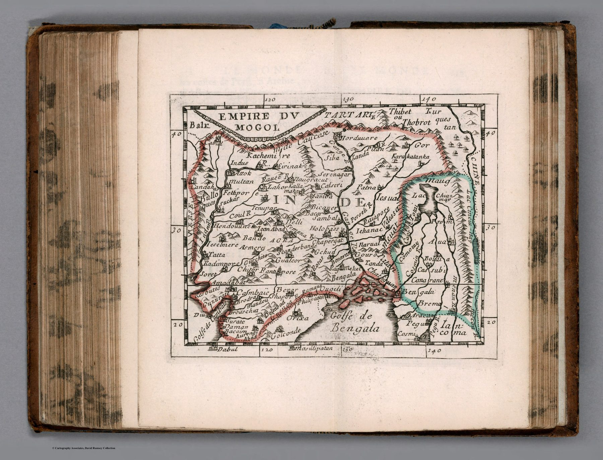

← The Great Mogul and the Companies

A map in miniature
Pierre Du Val, Sanson’s nephew and pupil, produced compact geographical works that circulated through repeated editions. At approximately one to thirty-one million, this sheet cannot offer detailed local geography. Its purpose is synoptic: the Mughal realm in summary.
The Sanson inheritance
The map carries forward the French school’s preference for clear political organisation and limited ornament. It is a smaller derivative within a recognised cartographic lineage.
The Great Mogul as shorthand
By the late seventeenth century, ‘Empire du Mogol’ had become a standard European label through which the subcontinent could be introduced in general geography. The name supplied coherence even though Mughal authority varied across regions, and the map’s boundaries are not surveyed borders.
On the sheet
The frame ends at the twentieth parallel. Dabul and Masulipatan sit on the bottom border, the Golfe de Bengala fills the lower right, and the whole peninsula below them – Bijapur, Golconda’s mines, the Carnatic, Malabar, Ceylon – lies outside the map. What is inside is the empire and nothing else: a red wash traces its boundary from Candahar and Cabul round Cachemire and the Ganges to Bengala and Aracan, and a blue one marks the frontier with Pegu and Ava. Agra, Delli, Lahor, Amadabat, Surate and Golconde are the names an atlas reader was expected to know; Cambaie and Bengala are given their gulfs. The plate measures eleven centimetres by thirteen.
The gaze
At one to thirty-one million, a province is a word and a frontier a line. Du Val’s India can be read in a minute, which is what his buyers wanted, and the Mughal name supplies the coherence the scale removes. The uncle assembled the political picture; the nephew made it pocketable.
In the Deccan timeline
Akbar takes Ahmadnagar (August 1600) · The end of Ahmadnagar (1636) · Shaista Khan and Surat (1663–1664) · Madanna and Akkanna at Golconda (c. 1674–1686) · Aurangzeb takes Bijapur and Golconda (1686–1687) · Aurangzeb dies at Ahmadnagar (3 March 1707)